Modifiers: the whole flow
Phone, light mode, Food store with the milk tea demo. 42 steps in order. Each caption says what to tap next. Tap a picture to open it full size.
1. Setup
Turn on Food, then look over and edit a modifier. Steps 1–10.
1 Items › Modifiers before any are made. Next: Settings › Business type.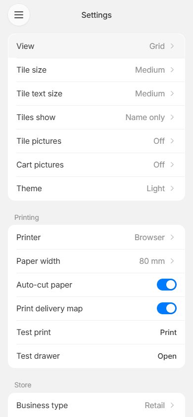
2 Settings › Store. Tap Business type.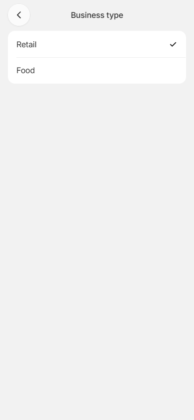
3 Tap Food. The milk tea demo loads once.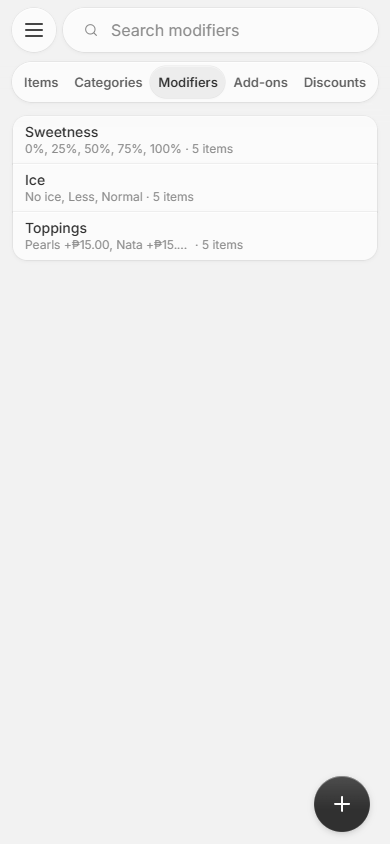
4 Items › Modifiers: Sweetness, Ice, Toppings. Tap a row, or search.5 Search “75%”: finds Sweetness by its choice.6 Toppings: name, Customer picks, choices, Asked on. Tap Customer picks.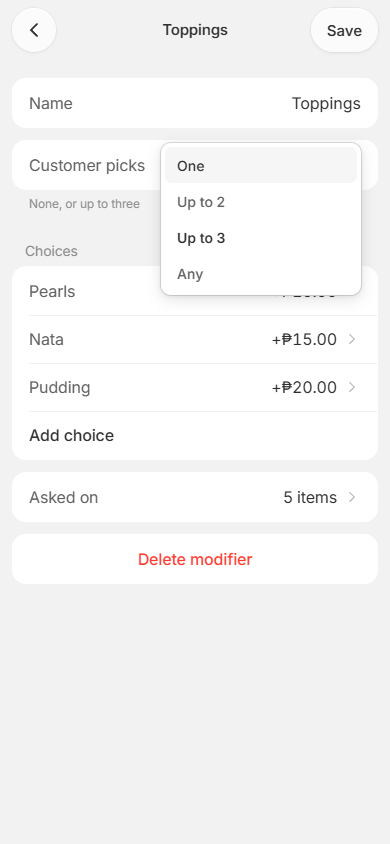
7 Customer picks: One, Up to N, or Any. Pick one.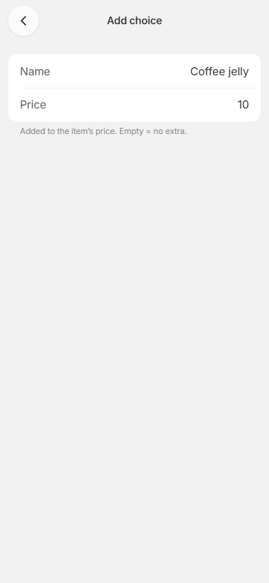
8 Add choice: name and price. Back keeps it.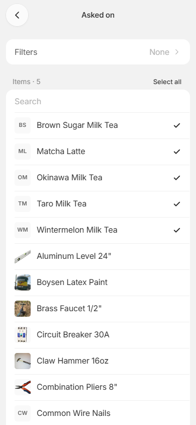
9 Asked on: tick the items that ask Toppings. Back.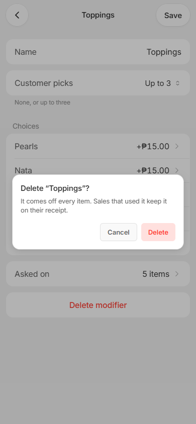
10 Delete modifier asks first. Cancel here.
2. Hide
Hide one choice on one item. Steps 11–17.
11 Items › Brown Sugar Milk Tea. Tap Modifiers.12 Its modifiers, in the order asked. Tap Sweetness.13 Switch 0% off for this item only. Back, then Save.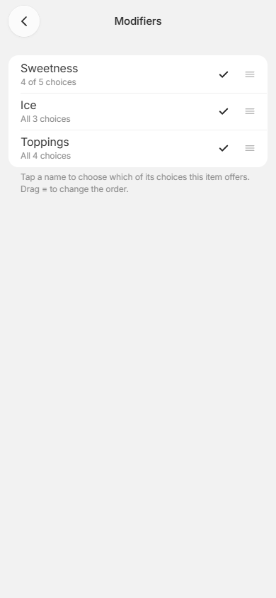
14 Sweetness now “4 of 5 choices”. Back, then tap Save.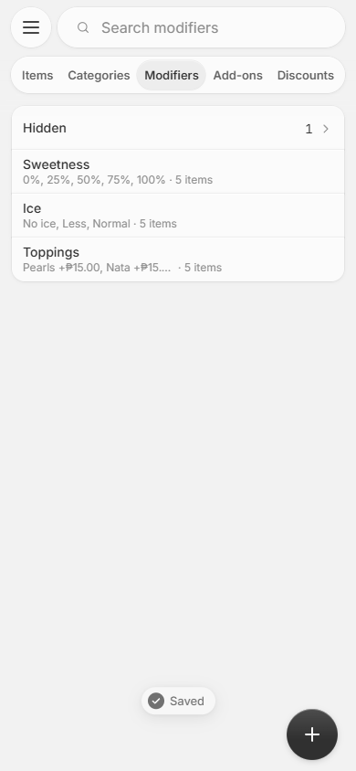
15 Items › Modifiers now has a Hidden row. Tap it.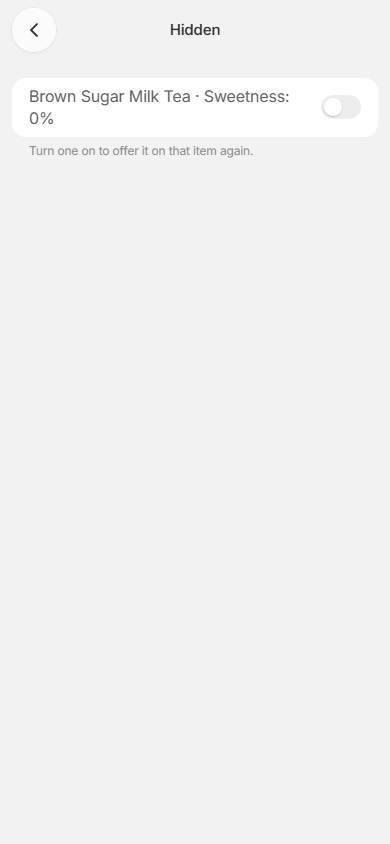
16 Hidden: every item that hides a choice. Switch on to bring it back.17 Edit choice 0%: Status, and Hidden on 1 item.
3. Sell
Sell two drinks with their answers, a line edit and a discount. Steps 18–31.
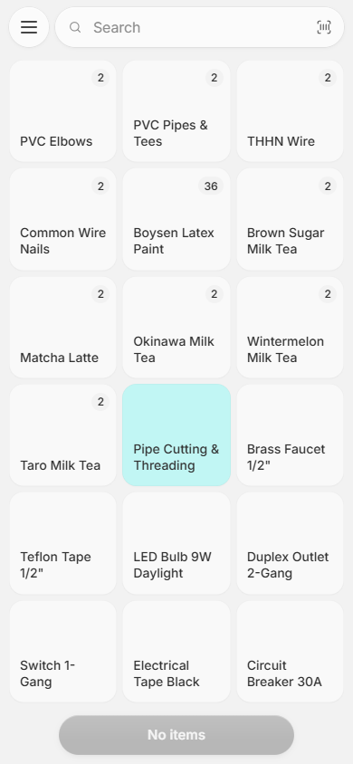
18 Sell. Tap Brown Sugar Milk Tea.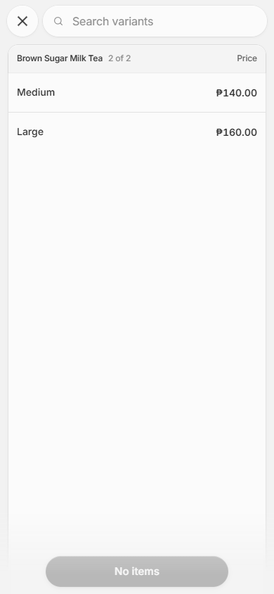
19 Pick a size: Large.20 Sweetness? 0% is gone on this drink. Tap 50%.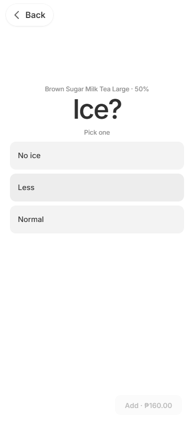
21 Ice? Tap Less. One-pick questions go on by themselves.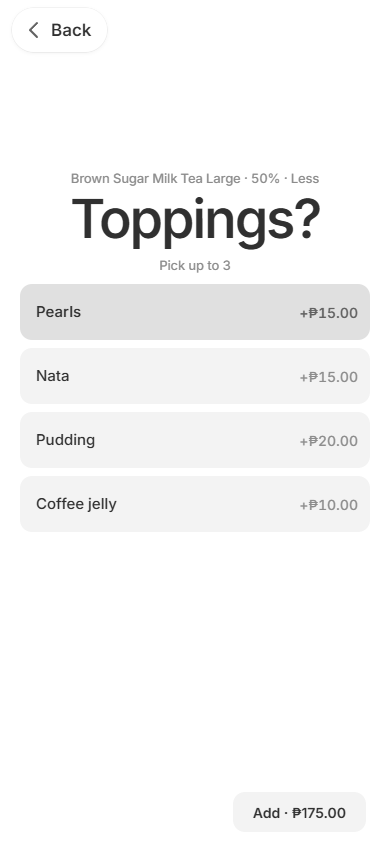
22 Toppings? Tap Pearls, then Add · price.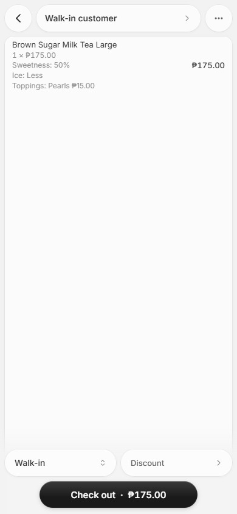
23 The cart shows each answer and its price. Tap the line.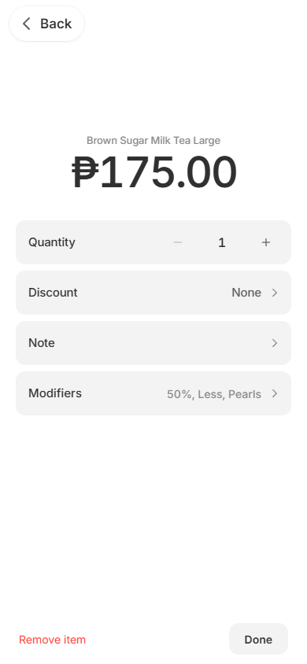
24 The line: Quantity, Discount, Note, Modifiers. Tap Modifiers.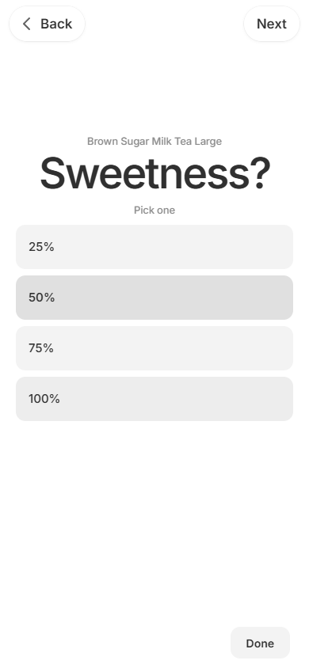
25 Answers come back filled in. Add Pudding, then Done.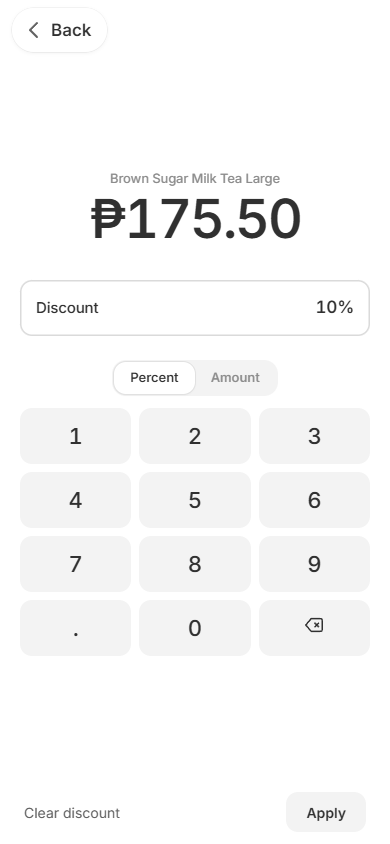
26 Line › Discount: type 10, Apply. 10% off the drink and its toppings.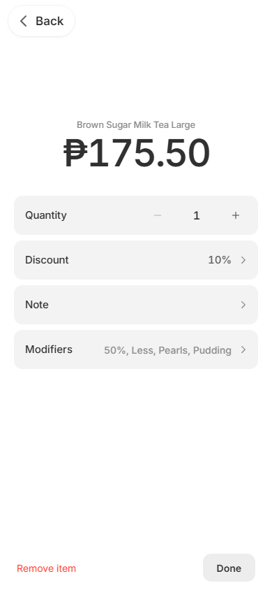
27 The line now reads 10% off. Tap Done.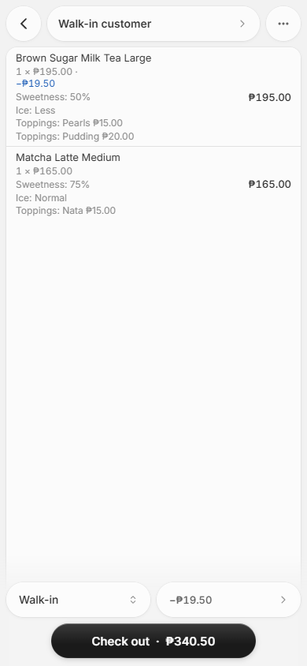
28 Add a Matcha the same way. Two drinks, each with its answers. Tap Check out.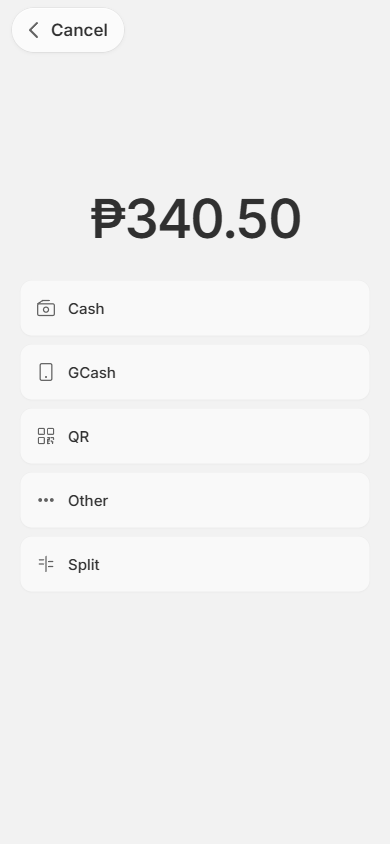
29 Checkout lists the answers. Tap Cash.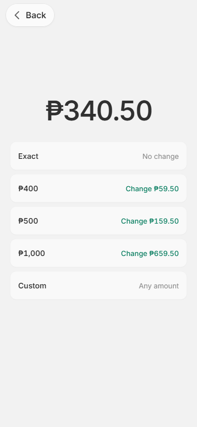
30 Cash: tap Exact.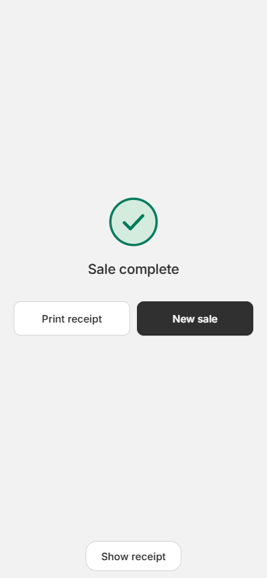
31 Sale complete: the receipt lists every answer.
4. After the sale
Refund one drink. Steps 32–37.
5. Unavailable
Out of a topping: turn it off for every drink. Steps 38–41.
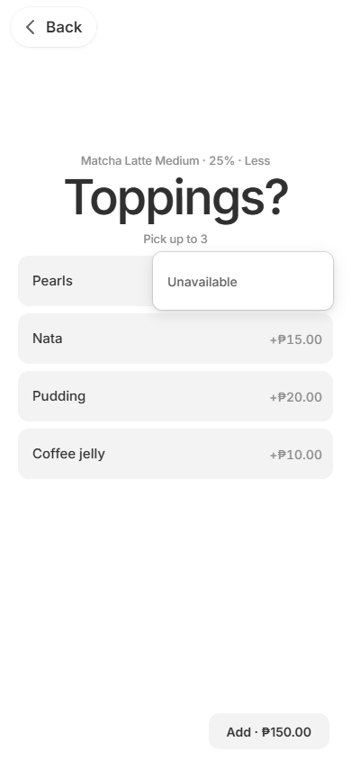
38 Out of Pearls: hold Pearls. Tap Unavailable.39 Pearls is greyed on every drink until turned back on.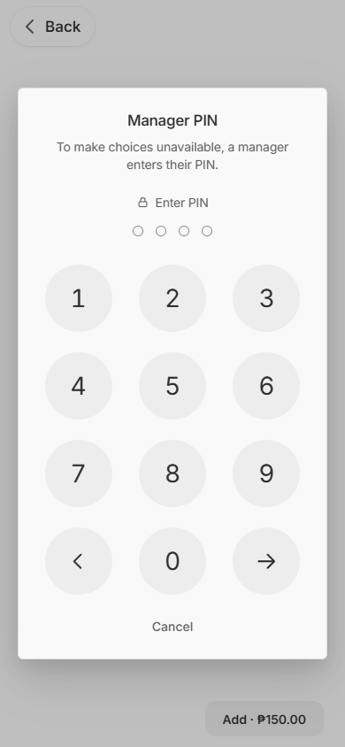
40 As a cashier the same tap asks a manager’s PIN.41 Back office › Staff & access › Roles › Cashier: “Make choices unavailable” is off, so the POS asks a manager’s PIN.
6. Report
See what sold. Steps 42–42.
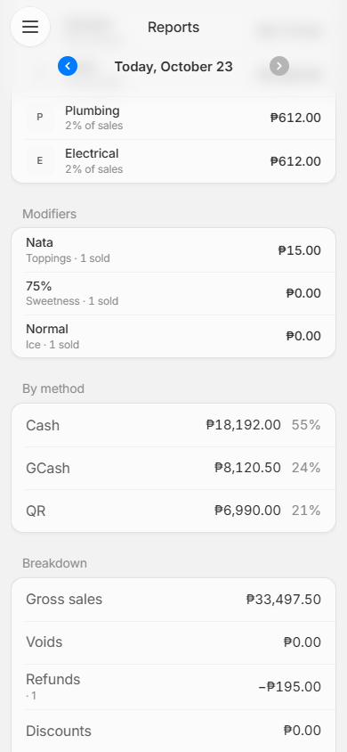
42 Reports › Modifiers: every choice sold, net of refunds, most sold first. Breakdown: Refunds takes the drink’s ₱195 off and its ₱19.50 discount comes back, so Net is what was kept.